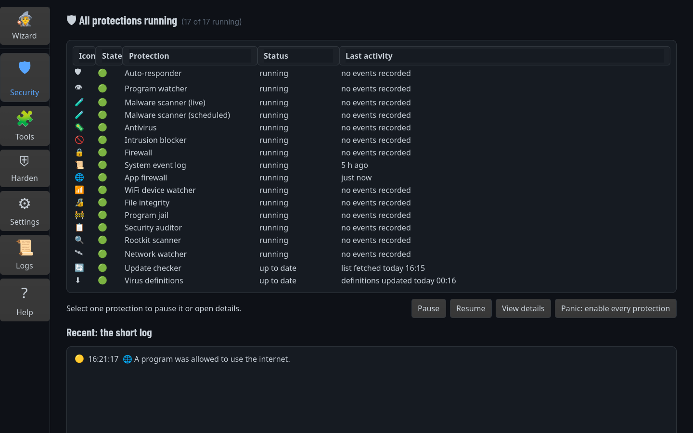
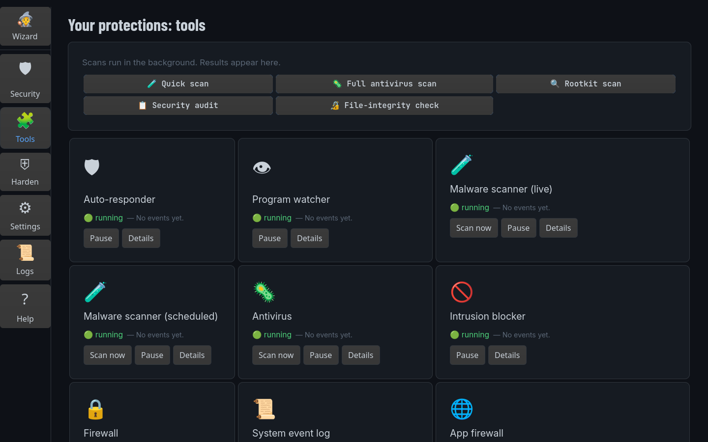
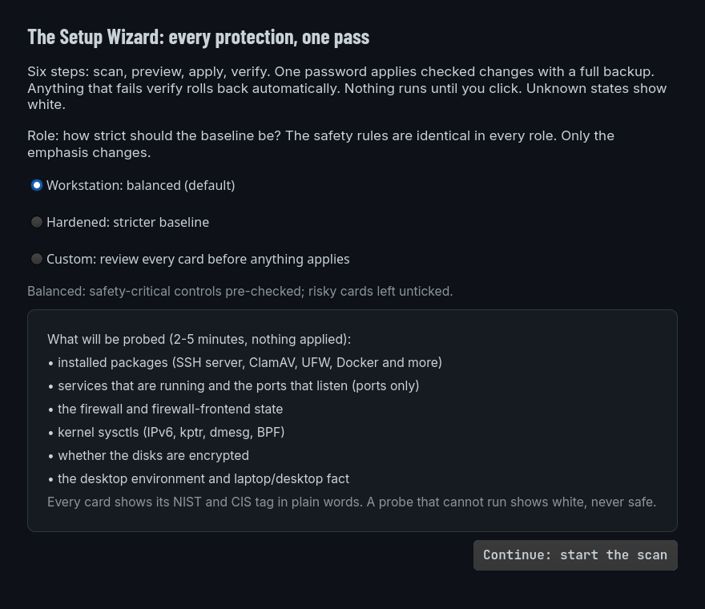
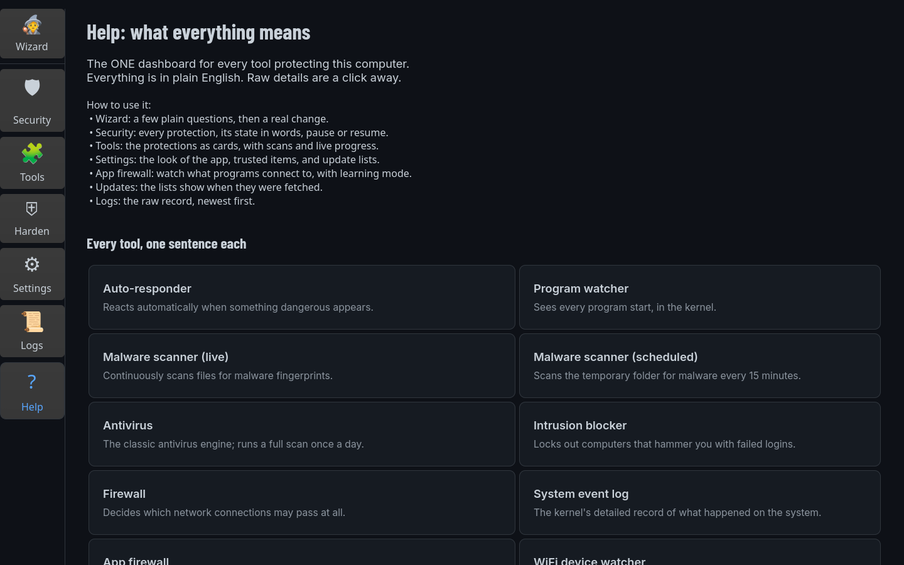
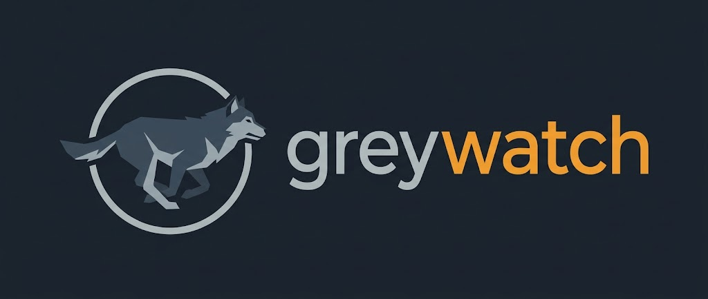
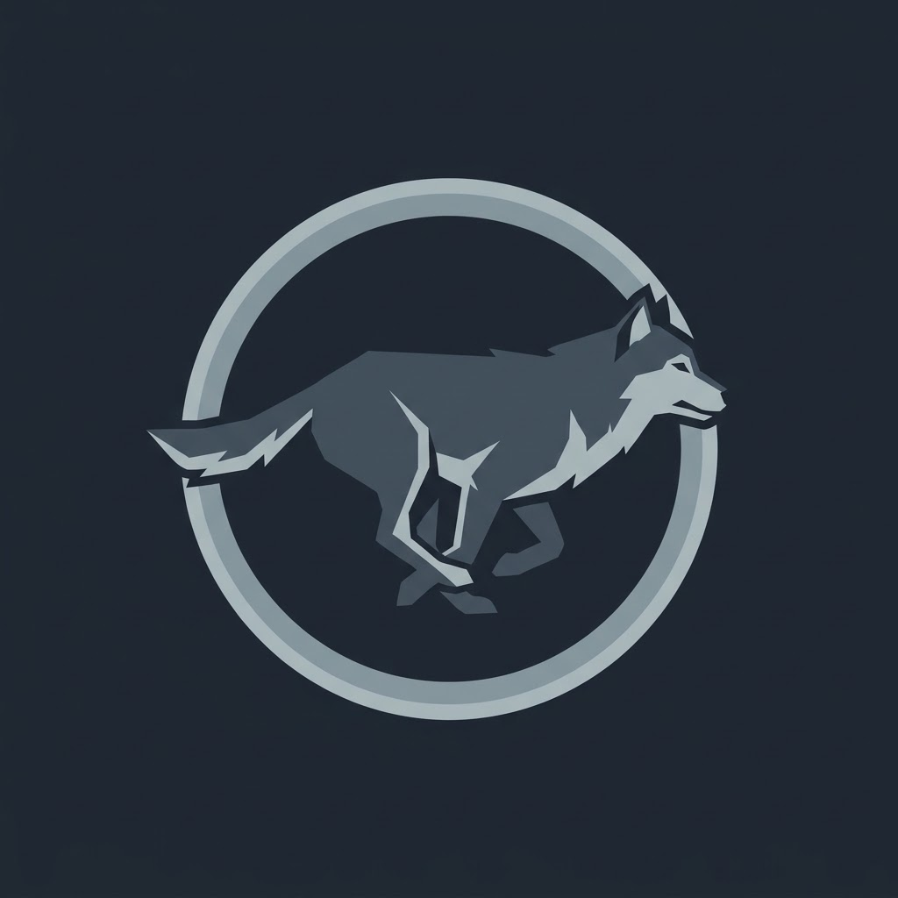

greywatch — Linux endpoint security for the desktop: root-level monitoring, an event audit trail, and reversible hardening, all running locally on your own machine.
A root daemon watches the machine in real time and writes an append-only audit trail. A command-line tool answers "what happened, and what did the machine decide about it?" A GTK 4 desktop app puts every protection, scan, and firewall rule under buttons you control. No cloud. No account. No telemetry.
What it does · Screens · Protections · How it works · Install · CLI reference · Security model · FAQ
greywatch status — updated 2026-10-26T09:06:20+00:00
🟢 aide GREEN — AIDE (integrity check)
🟢 appfw GREEN — App Firewall
🟢 arpwatch GREEN last:2026-10-25 — Arpwatch (ARP monitor)
🟢 clamav GREEN last:2026-10-26T06:54 — ClamAV (antivirus)
🟢 fail2ban GREEN — Fail2ban (bans)
🟢 ufw GREEN — UFW (firewall)
🟢 yara-watch GREEN — YARA Watch (realtime scanner)
What greywatch does
greywatch is a security program for a Linux desktop that already has security tools on it. The pieces most machines are missing are not more scanners — they are a record, an explanation, and one place to control everything. greywatch adds those three things and puts the whole setup on one dashboard.
Its four jobs:
- Watch. The root daemon (
greywatch.service) follows activity in real time: every program start, every new executable, every listening port, every systemd service change, firewall and fail2ban decisions, file changes under watched folders, and the health of the protections themselves. It reads this from the kernel's interface for file events (inotify), from the system journal, and from/proc— there is no kernel module of its own and nothing is patched. - Record. Every observation and every decision — what changed, what was allowed, what was blocked, and why — is appended to an event store owned by root with mode 0600. Your user session either sees the real history or is told honestly that it cannot read it; it is never shown a quiet dashboard that implies everything is fine.
- Explain. The command-line tool (
cli.py) is built only from Python's standard library, so it still runs on a broken or offline system. It turns the raw record into plain-language answers. - Control. The desktop app drives scans, per-application network filtering, and system hardening. Hardening is previewed, applied only what you approve, backed up, and reversible with one button.
What it is not. It is not a cloud service — nothing leaves the machine, and there is no server-side component or account. It is not a replacement for your distribution's firewall or antivirus; it manages the ones you have and fills only the specific gaps between them (the audit trail, the explanation layer, and per-program connection control). And it is not a magic guarantee: a protection it cannot verify is reported as "could not be checked", never as green.
Screens
These are real captures from the app running against live data on a test machine (hidden display; never the user's actual screen). The word on every card is what that tool reports — not a claim about the world.
Security — the main screen. All 17 protections of the catalog, each with its live state, its last activity, and Pause / Resume / Details where a real service backs it. A row's color means exactly one thing: green is running, amber is paused, red needs attention. The button at the bottom right is the Panic button: start and enable every protection in one confirmed step.

Tools — the workbench. One card per protection with Scan now / Pause / Details, and a strip that launches the five scan types. A running service is never presented as proof that its results are current — updater rows show the actual freshness of their lists.

Harden. Run the read-only baseline, review what each proposed step would change, approve, apply. Undo last change reverts the newest edit; every touched file is backed up and logged before modification.

Settings, Logs, and the Setup Wizard. The settings screen (dark or light theme, popups off by default, firewall options, updater lists); the logs screen filtered by tool; the wizard's first page — it asks the machine's role and shows exactly what it will probe before touching anything.

Help — every protection in one sentence each:

doc/help.html walks every screen in text, and the same walk lives inside the app's Help tab.
The protections it manages
The catalog holds 17 protections, defined in registry.json. Three are
greywatch's own components; the rest are standard Debian-family tools
installed on the machine, which greywatch supervises, records, and
offers you buttons for. The friendly name on each card is what you see
in the app.
| Catalog row | What actually runs | Part of greywatch |
|---|---|---|
| Auto-responder | The machine's event responder service | Driven |
| Program watcher | Tetragon, the kernel eBPF watcher | Driven |
| Malware scanner (live) | YARA watch service (realtime rule scans) | Driven |
| Malware scanner (scheduled) | YARA timer over temporary folders, every 15 min | Driven |
| Antivirus | ClamAV daemon | Driven |
| Intrusion blocker | fail2ban (bans repeated offenders) | Driven |
| Firewall | UFW (the system firewall) | Driven |
| System event log | auditd (the kernel's audit log) | Driven |
| Application firewall | The per-program outbound filter — engine and rules inside the greywatch daemon | Yes — this package |
| Network watcher | The light watcher for suspicious connection patterns inside the same daemon | Yes — this package |
| Arpwatch | arpwatch on each interface (ARP spoof detection) | Driven |
| File integrity | AIDE baseline check timer | Driven |
| AppArmor profile loader | apparmor (the distributions' mandatory-access-control layer) | Driven |
| Security auditor | lynis (configuration audit) | Driven |
| Rootkit scanner | rkhunter (rootkit indicators) | Driven |
| Update checker | The CVE-refresh timer this package installs | Yes — this package |
| Virus definitions | freshclam (ClamAV's definition updater) | Driven |
"Driven" means greywatch does not contain that tool — it checks its real state, records its decisions, gives you Pause / Resume and scanning buttons for it, and never invents a state it could not verify.
How it works
Three cooperating layers on one machine, plus the privileged helpers the desktop app calls. The diagram shows the direction of every write: only the daemon records; the CLI and the app only read what the daemon wrote.

| Layer | Job | Main parts |
|---|---|---|
| Root daemon | Watch, record, decide, self-check | greywatch.service running greywatch_daemon.py, its collectors, the event store, the firewall engine |
| CLI | Explain the record | cli.py — Python standard library only |
| Desktop app | Control and show | GTK 4 app (app.py), the tray helper, the wizards |
| Privileged helpers | Do root-only work on request | 16 scripts in apply/, each listed by exact path in the polkit policy |
The daemon
greywatch_daemon.py is started by systemd as root (Type=notify, so
the dashboard's "running" answer is not based on a lingering process).
Its collectors subscribe to real sources rather than polling blindly:
inotify file-change events, the system journal, /proc for new
executables and listening ports, unit state changes over the systemd
interface, and firewall/ban decisions. Its unit caps it at 50% of one
CPU and 768 MB of memory, so a flood of events can starve the daemon,
not your desktop. Two timers complete the picture: the watchdog
restarts the daemon if it dies, and the CVE timer refreshes the
vulnerability notes the dashboard annotates protections with (data from
the NVD API — the only outbound query greywatch itself makes).
The event store and decision records
Every observation is an append to a root-owned event file (mode 0600). Decisions — hardening applied, a firewall answer, a pause — are recorded the same way, next to the observation that caused them. The append-only shape is deliberate: the daemon cannot rewrite history, so the "what happened" answer in the CLI and the app is the machine's opinion, not a presentation. A user session without read access gets an explicit access message instead of an empty table (see the security model).
The scans
Five scans exist because they answer five different questions — the UI never merges them into one "run a scan" button.
| Scan | Engine | Question it answers |
|---|---|---|
| Quick scan | YARA | Is malware sitting in the temporary folders right now? |
| Full antivirus scan | ClamAV | Does the whole disk trip antivirus definitions? |
| Rootkit scan | rkhunter | Are there rootkit indicators on the system? |
| Security audit | lynis | How hardened is the configuration, and what can improve? |
| File-integrity check | AIDE | Did system files change against the recorded baseline? |
An unfinished scan is not a clean result; a scan that cannot run is reported as exactly that.
The application firewall
The application firewall decides outbound connections per program — the thing a plain firewall cannot do. It ships enabled in the default profile: at launch the app re-arms it if something left it off, and the Panic button does that for every protection.
Arming needs netfilterqueue (plus the libnetfilter-queue headers);
without them the engine stays off and nothing else changes. When
armed, the daemon installs its own nftables table — never your system
firewall's — and hands matching connections to a small compiled
verdict worker (appfw/bin/nfq_worker, built from nfq_worker.c) that
holds each connection packet for at most 250 ms. The decision order,
per new connection:
- trusted site → 2. trusted program → 3. permitted local services →
- downloaded block list → 5. learning mode → 6. block-unknown (strict mode) → 7. ask the user → 8. allow once (the fail-open default).
Blocking is never a lock-out risk by design: if the daemon dies, the nftables queue rule bypasses and traffic flows. That is a deliberate availability choice — while the engine is down, greywatch's connection filtering is down with it, and your other firewall rules are unaffected.
Hardening and the wizards
Hardening is a pipeline, and the buttons map one-to-one onto it:
| Step | Where | What happens |
|---|---|---|
| Baseline | wizard/baseline.py, wizard/inventory.py |
Read-only checks of the machine's security posture — nothing changes |
| Plan | wizard/detector.py, wizard/changeset.py |
Findings become a change plan; you decide one card at a time |
| Apply | apply/*.sh via pkexec |
Each card runs exactly one named helper script |
| Verify | the app's Verification strip | The applied state is re-checked and shown |
| Undo | apply/harden.sh, backups recorded by hardening/apply.py |
The newest change is reverted from its backup |
Privilege is pinned by polkit: the installed policy
(apply/polkit/greywatch.apply.policy) names the exact helper paths
allowed to run as root — eight actions, sixteen scripts, no generic
"do anything" grant. The desktop app is not a command shell; it can
only invoke what the policy lists.
The Setup Wizard walks the pipeline in six steps (welcome → scan → preview → apply → verify → finish). Two extensions build on it: the Tool Chooser adds protections from the catalog with guided setup, and six per-tool wizards (application firewall, YARA, UFW, fail2ban, arpwatch, Tetragon) turn "edit this config file" into a conversation that writes the config and shows you what it wrote.
The tray helper
The tray icon lives in its own helper process (tray_helper.py), so
the icon survives even if someone force-closes the main window, and a
fresh launch of the app is a restart of that same instance rather than
a second copy. Popups are off by default — the tray is the quiet
status surface, and desktop alerts must be turned on in Settings.
Installation and uninstall
Requirements:
| Component | What you need |
|---|---|
| Operating system | Debian, Ubuntu, or another systemd-based Linux distribution (developed on Debian with MATE; the tray icon needs an AppIndicator-compatible panel) |
| CLI | Python 3.12+ — standard library only, nothing to install for it |
| Desktop app | GTK 4 with PyGObject |
| Tray icon | AyatanaAppIndicator3 |
| Privileged hardening | polkit and pkexec with this project's exact-helper policy |
| Scans | YARA, ClamAV, rkhunter, lynis, AIDE — whichever protections you use |
| Application firewall (optional) | nftables, NFQUEUE support, Python netfilterqueue |
sudo ./install.sh # system files + services + user icons
./install.sh --check # verify the deployment (no root needed)
Or install from the Debian package. Every tagged Release on GitHub
carries two downloads: a source bundle and an installable
greywatch_<version>_amd64.deb. The package installs the program into
/opt/greywatch, drops in the systemd services, the polkit policy, the
application icon, and the launcher — all in one step, and it starts the
daemon for you. Removing it removes those files and deliberately keeps
your recorded history:
sudo apt install ./greywatch_0.1.0_amd64.deb
sudo apt purge greywatch # removes the package; data/ stays
install.sh is short and meant to be read before it is run with sudo.
It fills this checkout's path into the hardened systemd unit
(doc/greywatch.service) and the polkit policy, installs both,
reloads systemd, enables and restarts the service, and installs the
user icons and launcher. Without sudo it installs only the icons and
launcher. You can rehearse the whole thing in a sandbox directory:
./install.sh --root <dir> then ./install.sh --check --root <dir> —
the same flow the test battery runs.
Then check the machine:
python3 cli.py status
The application firewall and desktop popups both start off; open the app and walk the Setup Wizard before approving any hardening.
Removing it reverses the install but deliberately keeps your history:
sudo ./install.sh --uninstall
It removes the services, the policy, and the launcher, and keeps the
data/ tree — your recorded security history stays on the machine
unless you delete it yourself.
Configuration
Nothing to configure before the first run, and no credentials anywhere — the suite drives the tools already on the machine. The only environment names the code reads:
| Name | Who reads it | Purpose |
|---|---|---|
GREYWATCH_UI_USER |
daemon | account the GUI relaunches under |
GREYWATCH_USER_HOME |
registry | alternate HOME for runtime state |
GREYWATCH_HELPER_CMD |
tests | test-only helper override — never set on a real machine |
NOTIFY_SOCKET |
firewall engine | set by systemd for Type=notify |
data/ tree |
everything | runtime state — root-owned, never shipped |
Command reference
Start with status; commands that read protected records are subject
to the event store's root-only permissions.
| Command | What it does | Example |
|---|---|---|
| status | Current protection state | python3 cli.py status |
| events | Recorded observations | python3 cli.py events |
| tail | Follow live activity | python3 cli.py tail |
| log | Daemon log output | python3 cli.py log |
| decisions | What changed or was allowed, and why | python3 cli.py decisions |
| rules | The firewall rules in effect | python3 cli.py rules |
| answer | Decide one pending interaction (decided once; the helper runs via pkexec) | python3 cli.py answer ID OPTION |
| doctor | Self-check of greywatch itself | python3 cli.py doctor |
| setup | First-time service setup | python3 cli.py setup |
| action | Maintenance actions (daemon restart) | python3 cli.py action restart |
Security model
Three guarantees, kept deliberately narrow:
- Unknown stays unknown. A check that cannot be verified reports "could not be checked." It never guesses and never fakes a green dot.
- Timeouts stay timeouts. If the pkexec password prompt hits the 30-second limit, the action reports a timeout — not success.
- Unreadable stays unreadable. A record your session cannot read produces an access message, not an empty table.
The daemon runs as root; the desktop app is only an interface, and all privilege escalation goes through pkexec with an allowlist of exact helper paths. The event store's root-only, append-only design resists a compromised normal user session — and it is not advertised as more than that: a file permission is not a kernel-enforced write-once flag, and nothing here claims to survive a fully compromised host.
Known limitations, stated plainly:
- The firewall engine resolves processes from
/proc(no eBPF), so a brief burst can miss a resolve and fall back to allow-once; the nftables rule bypasses a dead engine, so it can never lock traffic out. - Reverse DNS fills hostnames best-effort for site trust; an unresolvable IP is judged only by IP and path, never by a guess.
- A same-size rewrite inside one 50 ms polling window can slip past
content checks — every polling tool (including GNU
tail -F) shares that limit. - Disk encryption is ignored by this build: never probed, never touched.
- A single fail2ban ban never interrupts you; only repeated re-bans of one IP within a short window ask for a decision.
Testing
The shipped battery, run exactly as CI runs it:
env -u DISPLAY python3 -m pytest -q tests/ # 614 passed, 4 skipped
614 tests pass with no display; 4 more are display tests that join
under a real or virtual display, where the GUI smoke suite grows the
set by 67. The Harden path is tested never to escalate privileges by
itself, the wizard flows are tested end-to-end with fakes, and the
release workflow compiles the .so set, proves the battery against
that compiled tree, and only then publishes the bundle and the Debian
package — a release whose battery failed is never published.
FAQ
Can the firewall lock me out of the network? No — it starts off, and if its daemon dies the queue rule bypasses so traffic keeps flowing. That is a design guarantee about this engine, not about every other firewall rule you may enable; review strict block-unknown mode before turning it on.
What does "paused" mean on a protection? The service behind it is stopped and you can resume it from Security or Tools. The app only ever shows paused while the unit really is — it never labels a running protection as paused, and nothing pauses a protection on its own.
Will it interrupt me with popups? No. Desktop popups are off by default and must be turned on in Settings; the tray icon is the quiet status surface.
What does closing the window do? It hides to the tray and the app keeps running. Where no tray exists, closing really exits. Launching the app again is a restart, not a second copy.
Does anything leave this machine? No. There is no cloud component; observations and decisions stay in the local store. The tools it refreshes (update lists, antivirus definitions) make their own normal network connections, and the CVE annotations come from a keyless query to the NVD API.
Does the NIST mapping mean I'm compliant? No. Protections are annotated with the NIST 800-53 control objectives they support (AC, CM, SI, SC families). Those annotations explain intent — not a certification or an assessment of your machine.
Can I preview and undo hardening? Yes — every step is previewed before you approve it, every applied change is backed up, and Undo last change reverts the newest one.
What happens when the privilege prompt times out? The app reports that the 30-second pkexec prompt timed out. It does not claim the action happened.
License
Apache License 2.0 — see LICENSE. Contributions land under the same license terms. Use is meant for defensive security on machines you own or are authorized to administer — nothing else.
Roadmap
- v0.2 — a
.debpackage that installs the unit, the polkit policy, and the icons in one step, so install.sh stays the manual fallback. - Premium (separate private repo) — hosted summaries and extra profiles. The free core on this page stays free and untouched by it.


greywatch — protections you can see, changes you can undo.